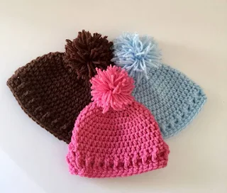
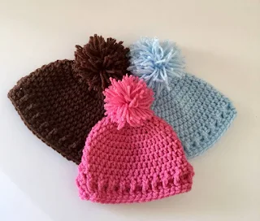

About Us:
Hello everyone! My love affair with crochet began in a unique way. when I was pregnant with my first child. Back then, I didn't know the first thing about crocheting! Being alone, I craved the beautiful crocheted baby items I saw online. So, I took a leap of faith, bought yarn and a hook, and embarked on a learning adventure through YouTube. Starting with basic double crochets (DCs), I practiced relentlessly until I could create a cozy blanket. That's when I knew I was hooked (pun intended)! From there, I crocheted cardigans, hats, adorable baby dresses, and even booties. But my passion didn't stop there. I discovered a love for designing my own patterns. Driven by the desire to empower others like me who yearn to learn crochet, I decided to share my work and knowledge with the world. That's how "Rania Crochet Guide" on YouTube was born! My goal is to make crochet patterns as easy and accessible as possible, so everyone can experience the joy of creating beautiful things with yarn. Believe me, you can do it too! Join me on my crochet journey by joining me on social media. Let's create something amazing together!


 
